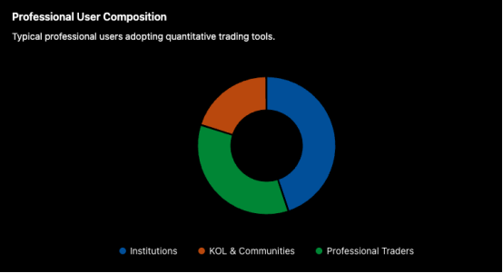
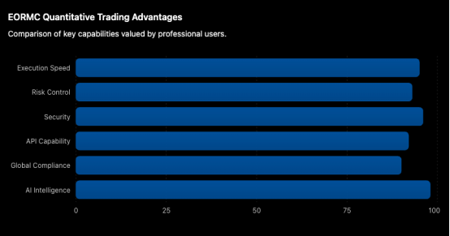

As the digital asset market enters a stage of professional development, quantitative trading is gradually evolving from a professional tool used by a small number of institutions into important infrastructure for institutional investors, professional trading teams, and industry KOLs to improve trading efficiency. Facing a market environment that operates 24 hours a day without interruption, the traditional manual market-monitoring model can no longer meet complex trading demands. With its AI-driven intelligent trading system, comprehensive quantitative tool ecosystem, and global compliance service capabilities, EORMC is becoming an important platform for more professional investors to deploy quantitative strategies.

AI Intelligent Matching Engine Improves Trading Execution Efficiency
The core of quantitative trading lies not only in the strategy itself, but also in whether the strategy can be executed accurately.
EORMC deeply integrates artificial intelligence technology into its trading matching system. Through AI models, it analyzes market liquidity, order book depth, and market volatility in real time, dynamically optimizing order execution paths.
Compared with traditional trading platforms, an AI-driven matching system can effectively reduce order slippage, improve execution efficiency, and maintain stable operation during periods of severe market volatility. This is of significant value to institutions and professional trading teams that need to frequently execute large numbers of orders.
In a high-frequency quantitative trading environment, millisecond-level differences in execution often directly affect final returns. Therefore, stable and efficient matching capabilities have become an important standard for professional investors when choosing a platform.
Multi-Dimensional Risk Control System Safeguards Quantitative Strategies
As market complexity continues to increase, risk management has become an important component of quantitative trading systems.
EORMC has established an intelligent risk control system covering pre-trade warnings, in-trade intervention, and post-trade tracking. Through AI algorithms, the platform monitors market volatility, on-chain capital flows, account behavior, and abnormal trading patterns in real time, enabling it to identify potential risks promptly and take corresponding measures.
For institutional users, this intelligent risk control mechanism can effectively reduce systemic risks; for professional traders, it can reduce the impact of extreme market conditions on strategy operation; and for KOLs, a transparent and verifiable risk control system also helps enhance the trust of community users.
Industry professionals believe that the future competition in quantitative trading will not only be a competition of returns, but also a competition of risk management capabilities.
Open Quantitative Ecosystem Meets The Needs Of Professional Users
In addition to execution efficiency and risk control, the openness of a quantitative trading platform is equally important.
EORMC provides comprehensive API interfaces and automated trading tools, supporting institutions and professional teams in quickly connecting their own quantitative systems and enabling automated strategy operation.
At present, the platform supports a variety of mainstream quantitative models, including trend trading, grid trading, arbitrage strategies, multi-factor models, and high-frequency trading strategies. Users can quickly deploy strategies using the platform existing tools, or conduct in-depth customized development according to their own needs.
For institutions, this means they can build more complex trading systems; for professional trading teams, it enables coordinated management of multiple accounts and multiple strategies; and for KOLs, it allows them to more intuitively display strategy logic and historical performance, providing community users with investment content of greater reference value.

Security And Compliance Become Important Reasons For Institutional Choice
In the field of digital assets, asset security has always been a core concern of the market.
EORMC combines AI technology with multiple security technologies such as MPC and HSM to establish a three-dimensional protection system covering account security, asset security, and trading security. Through mechanisms such as hot and cold wallet separation, multi-factor authentication, and abnormal behavior identification, the platform provides comprehensive protection for user assets.
At the same time, as global regulatory frameworks gradually improve, institutional investors are placing increasingly high requirements on the compliance capabilities of platforms.
Through its global operational layout and compliance system construction, EORMC provides users in different regions with service environments that meet local regulatory requirements. This development model, which balances innovation and compliance, is gaining recognition from more professional investors.
Why KOLs Are Beginning To Embrace Quantitative Trading
It is worth noting that in recent years, more industry KOLs have also begun to use quantitative trading as an important tool for content creation and community operation.
In the past, KOLs relied more on personal experience for market analysis, while quantitative trading can improve the professionalism and credibility of content through data models and strategy logic. At the same time, automated trading systems reduce a large number of repetitive operations, allowing KOLs to devote more energy to market research, community building, and user education.
In addition, quantitative strategies are backtestable and verifiable, which also helps improve community user understanding of trading logic and risk management systems, further enhancing user engagement.
AI Quantitative Trading Is Becoming New Industry Infrastructure
Market analysts believe that as the digital asset market gradually matures, quantitative trading will evolve from a tool exclusive to professional institutions into industry infrastructure.
The key to future market competition will no longer be merely discovering opportunities, but who can execute strategies faster, control risks more precisely, and manage assets more efficiently.
With its AI-native matching engine, intelligent risk control system, open quantitative ecosystem, security protection mechanism, and global service capabilities, EORMC is building a quantitative trading ecosystem for the next generation of digital finance. For institutional investors, professional trading teams, and industry KOLs, quantitative trading is not only a tool, but also an important capability for enhancing competitiveness. EORMC is becoming an important choice for more professional users entering this field.
FAQ
Q1: Which Users Are Quantitative Trading Features of EORMC Suitable For?
They are suitable for institutional investors, professional trading teams, quantitative developers, and ordinary users who wish to improve trading efficiency through automated strategies.
Q2: Does Quantitative Trading Necessarily Require Programming Knowledge?
Not necessarily. EORMC provides a variety of strategy tools and automated solutions, allowing users without development experience to use them as well.
Q3: What Are the Core Advantages of EORMC?
The core advantages of EORMC include AI intelligent matching, an intelligent risk control system, an open API ecosystem, global compliance services, and asset security protection capabilities.
Q4: Why Do Institutions Place Greater Emphasis On Quantitative Trading?
Institutions usually manage large-scale funds and need automated systems to improve execution efficiency, reduce human errors, and achieve risk control.
Q5: What Is The Value Of KOLs Using Quantitative Trading?
It can improve content professionalism, enhance strategy transparency, and provide community users with more valuable data-driven investment analysis.